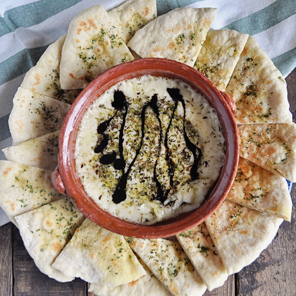

Baked Provolone

Description
Melted provolone with fragrant herbs pairs perfectly with crispy garlic flatbread. Simple, satisfying, and delicious.
Ingredients
- 1 8-ounce wheel of provolone cheese
- pinch of dried oregano
- pinch of dried basil
- pinch of dried thyme
- sea salt
- black pepper
- balsamic glaze
- 1 cup all purpose flour
- 1 tsp baking powder
- 1/4 tsp sugar
- 1/2 tsp salt
- 1 tbsp extra virgin Spanish olive oil
- 1/3 cup water
- EXTRAS
- extra virgin Spanish olive oil
- garlic powder
- dried parsley
Steps
- To make the garlic flatbread, add 1 cup of all-purpose flour to a bowl, then add 1 teaspoon of baking powder, 1/2 teaspoon of sea salt and a 1/4 teaspoon of white sugar, mix all the dry ingredients together, then add 1 tablespoon of extra virgin Spanish olive oil and 1/3 cup luke warm water, mix until you form a dough, then knead the dough inside of the bowl between 1-2 minutes and shape it into a ball
- Add a piece of parchment paper to a flat surface, sprinkle with a little all-purpose flour, add the ball of dough on top, cut into 3 evenly sized pieces and shape each piece into a ball, then flatten each one out, you want a circular design that is about 1/8 of an inch in thickness
- Heat a non-stick frying pan with a medium heat, once the pan get´s hot, cook each piece of dough, one at a time, for 1 1/2 - 2 minutes per side with a lid on top of the pan
- Once all the flatbreads are cooked, drizzle each one with a kiss of extra virgin Spanish olive oil, and then season with garlic powder and dried parsely, cut 6 triangles from each flatbread and set aside
- Add one 8-ounce piece of provolone cheese into an oven-proof shallow bowl, season it with a pinch of dried thyme, a pinch of dried basil, a pinch of dried oregano, a kiss of sea salt and freshly cracked black pepper, add the cheese to a pre-heated oven, bake and broil option, 250 C-480F, between 10 to 11 minutes, then remove the cheese from oven
- Add the shallow bowl with the melted cheese to a place, drizzle the cheese with a kiss of balsamic glaze and decorate the garlic flatbreads throughout the plate
- Enjoy!